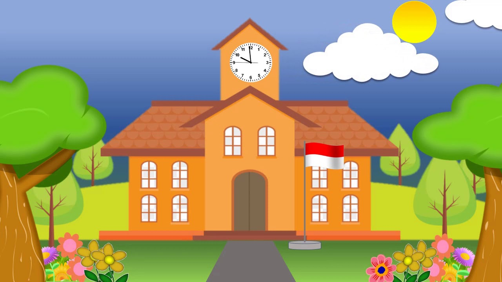
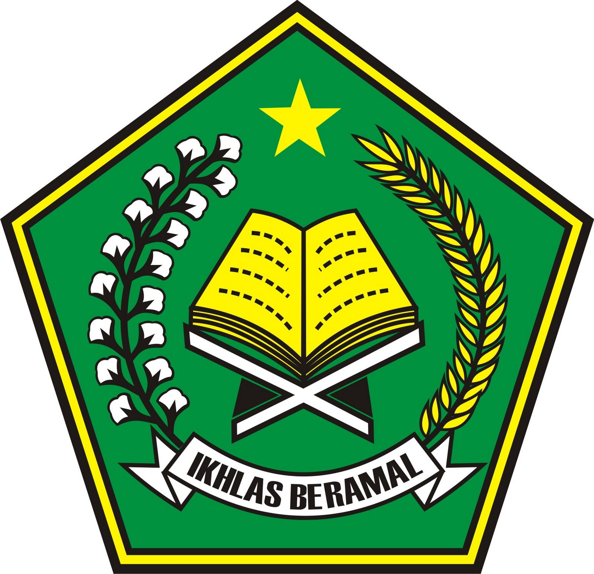
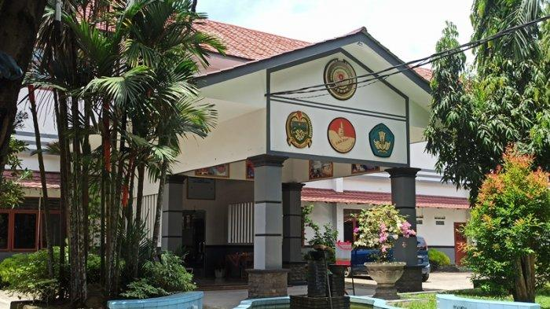

Personal

Suci Khairunisa adalah individu yang sangat tertarik dengan hal yang menantang, baik itu di pelajaran ataupun diluar pelajaran, tetapi ia tidak ingin ribet. Sejak kecil, suci sangat giat mengejar impiannya. Mengambil jurusan rekayasa perangkat lunak bukanlah impian sebenarnya,tetapi Suci yakin ini adalah jalan yang terbaik untuk sukses.
Pendidikan
Pendidikan Formal
- MTS ALWASLIYAH MEDAN KRIO
Pengalaman
SDN 105267

pengalaman saya selama di sd :
- pelaksanaan petugas upacara bendera
MTS ALWASLIYAH MEDAN KRIO

pengalaman saya selama di mts :
- mengikuti pidato antarsekolah
SMKN 9 Medan

Menempuh pembelajaran dengan jurusan Rekayasa Perangkat Lunak
saat saya masih dikelas X, dijurusan RPL says belum terlalu mengerti tentang pelajaran produktif di RPL, setelah saya pelajari perlahan-lahan akhirnya saya mulai mengerti sedikit demi sedikit. Dan setelah saya naik Kelas 11 RPL 2, saya sudah paham tentang pelajaran produktif.
Contact
Untuk Mengenal Lebih Lanjut dengan saya dapat dihubungi pada akun media sosial berikut ini :